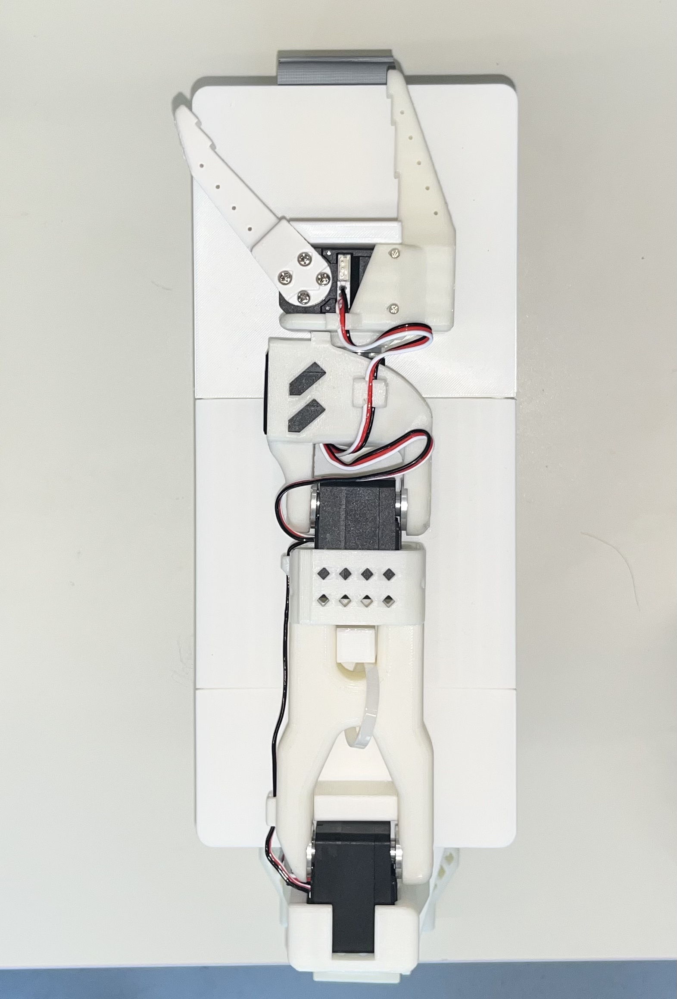
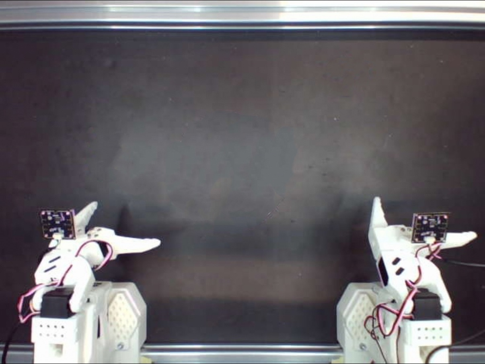
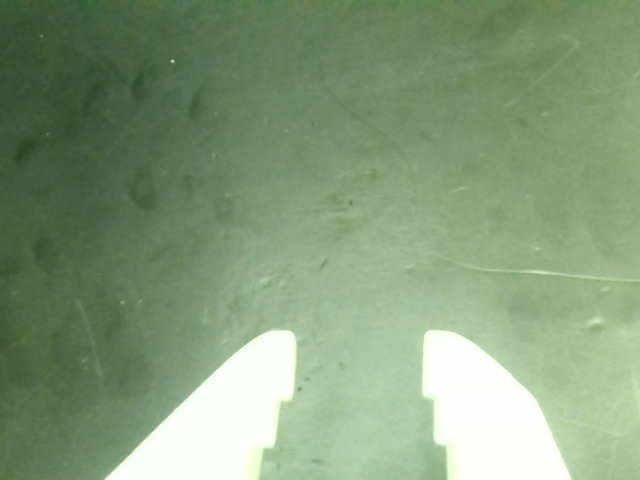
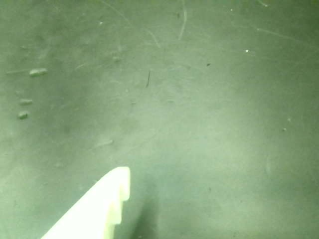

System Calibration系统标定
Calibrate arms when hardware is first installed or changed. For daily startup, verify the H pose, restore the saved camera image controls and compare all three cameras with the existing reference images.首次安装或硬件变化后标定机械臂；日常开机则验证 H 位、恢复已保存的相机图像参数，并将三台相机与已有参考图对齐。
5. Arm calibration5. 机械臂校准
Perform this section only for the first installation, after replacing an arm or servo, after reassembling the mechanical structure, when calibration files are missing, or when the H pose is clearly incorrect. Calibration does not need to be repeated at normal startup.只有在首次安装、机械臂或舵机更换、机械结构重新组装、校准文件丢失或 H 位明显异常时，才需要执行本节。正常开机无需重复校准。
The following conditions must be met before calibration:校准前必须满足以下条件：
- Servo ID assignment and assembly have been completed following the official SO-101 procedure.已按 SO-101 官方流程完成舵机编号和组装。
- Only one arm is being operated, and its port and calibration ID are correctly matched.当前只操作一条机械臂，端口和校准 ID 对应正确。
- The arm is correctly seated in the physical limit fixture.机械臂已正确放入物理限位架。
- The motion range is clear of people, cables and other obstacles.运动范围内没有人员、线缆或其他障碍物。
5.1 Calibration with range preview5.1 带范围预览的校准


Example for the left follower arm:以左从臂为例：
python BREE/robot_calibration/fixture_midpoint_auto_calibrate.py \
--device follower \
--port /dev/ttyACM0 \
--id follower_arm_left \
--preview-ranges
When prompted to place the arm in the limit fixture, confirm that the arm is fully secured, then press Enter. The program calculates calibration values and moves the joints during the preview; leave enough clearance beforehand.程序提示放入限位架时，确认机械臂完全固定，再按 Enter。程序会生成校准值，并在预览过程中移动关节；必须提前留出足够空间。
When the following final prompt appears:最后出现以下提示时：
Write this calibration to the motors and save it? [y/N]
After checking the values and motion directions, enter y. If you are unsure, press Enter or enter n; the program will not save the new calibration.确认数值和运动方向无误后输入 y。如果不确认，直接按 Enter 或输入 n，程序不会保存新校准。
For the other arms, replace the command arguments with the device, port and ID from the table below:其余机械臂使用下表中的 device、端口和 ID 替换命令参数：
| Arm机械臂 | --device | --port | --id |
|---|---|---|---|
| Left follower左从臂 | follower | /dev/ttyACM0 | follower_arm_left |
| Right follower右从臂 | follower | /dev/ttyACM1 | follower_arm_right |
| Left leader左主臂 | leader | /dev/ttyACM2 | leader_arm_left |
| Right leader右主臂 | leader | /dev/ttyACM3 | leader_arm_right |
5.2 Calibration without range preview5.2 不进行范围预览
If you have already verified the mechanical structure and motion directions, you can omit --preview-ranges:如果已经验证过机械结构和运动方向，可以省略 --preview-ranges：
python BREE/robot_calibration/fixture_midpoint_auto_calibrate.py \
--device follower \
--port /dev/ttyACM0 \
--id follower_arm_left
This still recalculates and writes calibration, so it must not be used as a daily check command.这仍然会重新计算并写入校准，因此不能把它当作日常检查命令。
5.3 Calibration file locations5.3 校准文件位置
Follower calibration is usually saved to:从臂校准通常保存到：
~/.cache/huggingface/lerobot/calibration/robots/so_follower/
Leader calibration is usually saved to:主臂校准通常保存到：
~/.cache/huggingface/lerobot/calibration/teleoperators/so_leader/
If calibration with the same name already exists, the script first creates a .bak backup. For example:如果同名校准已经存在，脚本会先生成 .bak 备份。例如：
follower_arm_left.json.bak
5.4 H-pose verification for both follower arms5.4 双从臂 H 位验证
After calibrating the left and right follower arms, ensure the workspace is safe, then run:完成左右从臂校准后，在确保工作空间安全的情况下运行：
python BREE/robot_calibration/demo_bi_so_home.py \
--left-port /dev/ttyACM0 \
--right-port /dev/ttyACM1 \
--id follower_arm \
--duration-s 6
If a joint direction, center or range is abnormal, stop further data collection and real-robot evaluation. First check the calibration files, servo installation orientation and port mapping.如果某个关节方向、中心或范围异常，应停止后续数据采集和实机评估，先检查校准文件、舵机安装方向和端口映射。
Supplement · Standardize camera parameters补充 · 相机参数统一
Use the same capture format for the global, left-wrist and right-wrist cameras, then tune each camera under the fixed experiment lighting for consistent color and brightness. Retain each camera’s settings for collection and evaluation.全局、左腕、右腕相机使用统一的采集格式，再在固定实验光照下逐台调节，使三路画面的色彩与亮度一致。采集和评测均沿用各相机保存的参数。
| Parameter参数 | Target / procedure统一要求 / 操作 |
|---|---|
| Capture format采集格式 | 640 × 480 · 30 fps · MJPG |
| Device mapping设备映射 | Example: global / left wrist / right wrist = /dev/video0 / /dev/video2 / /dev/video4. Verify live views after reconnecting.示例：全局 / 左腕 / 右腕 = /dev/video0 / /dev/video2 / /dev/video4。重连后按实时画面核对。 |
| White balance and exposure白平衡与曝光 | Turn AUTO WB and AUTO EXP off after settling, then fine-tune and save the manual values.待画面稳定后，将 AUTO WB 与 AUTO EXP 关闭，再微调并保存手动值。 |
| Other image controls其他图像参数 | Adjust supported brightness, contrast, saturation, gamma, gain and sharpness controls per camera. Match the appearance of the same reference object; values may differ between cameras.按各相机支持情况调节亮度、对比度、饱和度、伽马、增益和锐度。用同一参照物匹配画面效果，各相机数值可不同。 |
First setup · tune and save首次设置 · 调节并保存
The repository provides BREE/camera_calibration/calibrate_three_camera_white_balance.py, which opens a combined preview and one control window per camera. Run it on Linux with a desktop display and GUI-enabled OpenCV, in the installed BREE environment. Close other camera previews, recording and evaluation processes first. On Ubuntu / Debian, install the V4L2 utility if needed:仓库提供 BREE/camera_calibration/calibrate_three_camera_white_balance.py，可打开三路合并预览与各相机的参数窗口。在已安装 BREE 的 Linux 桌面环境运行，OpenCV 需支持 GUI。先关闭占用相机的其他预览、录制和评测进程。Ubuntu / Debian 如缺少 V4L2 工具，先安装：
sudo apt install v4l-utils
python BREE/camera_calibration/calibrate_three_camera_white_balance.py \
--devices /dev/video0 /dev/video2 /dev/video4 \
--names GLOBAL LEFT_WRIST RIGHT_WRIST \
--width 640 \
--height 480 \
--fps 30 \
--output outputs/camera_check/camera_image_controls.json- Keep the lights and background fixed. Show the same neutral reference object to each camera and adjust WB TEMP, EXPOSURE TIME and the other available sliders until color and brightness are consistent, without washed-out highlights or motion blur.固定灯光与背景，让各相机拍到同一中性参照物。调节 WB TEMP、EXPOSURE TIME 及其他可用滑条，使色彩和亮度一致，避免高光过曝与运动拖影。
- Set both auto sliders to 0. Only controls exposed by the driver appear. Focus the preview and press S to read back and save the current driver values; press Q or Esc to quit and release all cameras.将两个自动模式滑条设为 0；窗口仅显示驱动支持的控制项。聚焦预览窗口，按 S 读取并保存驱动当前值，按 Q 或 Esc 退出并释放相机。
- The saved JSON stores image controls keyed by device path. Resolution, frame rate and MJPG remain separate settings in preview, collection and evaluation commands or configurations.保存的 JSON 按设备路径记录图像控制参数。分辨率、帧率和 MJPG 仍需在预览、采集与评测命令或配置中分别保持一致。
Daily startup · restore and verify日常开机 · 恢复并核对
After verifying device mapping, restore the locally tuned file with BREE/camera_calibration/apply_camera_image_controls.py. Replace the path below if your baseline is stored elsewhere:核对设备映射后，用 BREE/camera_calibration/apply_camera_image_controls.py 恢复本机调好的配置。若基准保存在其他位置，替换下方文件路径：
python BREE/camera_calibration/apply_camera_image_controls.py \
outputs/camera_check/camera_image_controls.json \
--force-manual \
--max-exposure-time 300
for camera in /dev/video0 /dev/video2 /dev/video4; do
v4l2-ctl -d "$camera" --get-fmt-video --get-parm --list-ctrls
doneThe restore script disables dynamic frame rate when supported, skips unsupported controls and limits saved exposure_time_absolute values to 300 by default to help preserve 30 fps. This is a driver control value. Review any clamp messages, then check brightness and actual stream cadence. Some cameras reset controls when streaming starts: check again after opening the intended stream and reapply from another terminal if needed.恢复脚本会在设备支持时关闭动态帧率，跳过不支持的控制项，并默认将保存的 exposure_time_absolute 上限设为 300，以帮助维持 30 fps；这是驱动控制值。若出现限幅提示，需重新检查亮度与实际出帧速度。部分相机在启动视频流时会重置参数：打开目标视频流后再次核对，必要时从另一终端重新应用。
The repository’s root camera_image_controls.json contains example values with automatic exposure enabled on all three cameras and automatic white balance enabled on the global camera. Tune and save your own baseline. After reconnecting, update device-path keys if the camera mapping changed. Continue with reference-image alignment once image controls are stable.仓库根目录的 camera_image_controls.json 是示例配置，其中三台相机仍开启自动曝光，全局相机还开启自动白平衡。请调节并保存本机基准；重连后若相机映射变化，应同步更新 JSON 中的设备路径。参数稳定后，再继续参考图对齐。
6. Camera adjustment and installation-position checks6. 相机调整与安装位置检查
6.1 Daily check sequence6.1 日常检查顺序
- First run
lerobot-find-cameras opencvto confirm the three camera indices.先运行lerobot-find-cameras opencv确认三个相机编号。 - Check the global camera position.检查全局相机位置。
- Check the left wrist camera position.检查左腕相机位置。
- Check the right wrist camera position.检查右腕相机位置。
- Proceed with data collection or evaluation only after all three views are aligned.三个画面都对齐后，再进行数据采集或评估。
6.2 Global camera check6.2 全局相机检查
The following command reads the existing reference image without overwriting the reference files:以下命令读取已有参考图，不会覆盖参考文件：
python BREE/camera_calibration/global_camera_reference_calibrate.py check \
--camera /dev/video0 \
--width 640 \
--height 480 \
--fps 30 \
--fourcc MJPG \
--camera-warmup-s 2 \
--web-host 127.0.0.1 \
--web-port 8092 \
--preview-fps 15 \
--max-candidates 8 \
--max-angle-deg 12 \
--min-length-ratio 0.35 \
--reference BREE/camera_reference/global_image/reference.json \
--output-dir outputs/camera_check/global_image
By default, this script connects to both follower arms and first moves them to the H pose. To check only the camera without connecting to the arms, add:默认情况下，该脚本会连接左右从臂并先移动到 H 位。只想检查相机、不希望连接机械臂时增加：
--skip-robot-home
Open in a browser:浏览器打开：
http://127.0.0.1:8092
The reference image and live view each contribute 50%. Adjust the camera until double images of fixed structures are minimized. Pay particular attention to:参考图和实时画面各占 50%。调整相机，直到固定结构的双影尽量消失。重点观察：
- The fixed metal crossbar at the top.顶部固定金属横梁。
- The outer contours of both arm bases.两个机械臂底座的外轮廓。
- The workbench edges.工作台边缘。
- Fixed screws and fixed markers.固定螺丝和固定标记。
- Fixed structures around the edges of the image.画面四周的固定结构。

Align both wrist cameras两台腕部相机对齐
6.3 Left wrist camera check6.3 左腕相机检查
python BREE/camera_calibration/wrist_camera_reference_calibrate.py check \
--camera-only \
--camera /dev/video2 \
--width 640 \
--height 480 \
--fps 30 \
--fourcc MJPG \
--camera-warmup-s 2 \
--reference BREE/camera_reference/overlay/left_wrist/reference.json \
--output-dir outputs/camera_check/overlay/left_wrist \
--live \
--web-host 127.0.0.1 \
--web-port 8091 \
--preview-fps 15 \
--overlay-alpha 0.5
Open http://127.0.0.1:8091 in a browser and use the reference image to adjust the position of the camera relative to the gripper.浏览器打开 http://127.0.0.1:8091，根据参考图调整相机与夹爪的相对位置。
6.4 Right wrist camera check6.4 右腕相机检查
python BREE/camera_calibration/wrist_camera_reference_calibrate.py check \
--camera-only \
--camera /dev/video4 \
--width 640 \
--height 480 \
--fps 30 \
--fourcc MJPG \
--camera-warmup-s 2 \
--reference BREE/camera_reference/overlay/right_wrist/reference.json \
--output-dir outputs/camera_check/overlay/right_wrist \
--live \
--web-host 127.0.0.1 \
--web-port 8092 \
--preview-fps 15 \
--overlay-alpha 0.5
Open http://127.0.0.1:8092 in a browser. If the actual left and right wrist camera indices are reversed relative to the example, swap the --camera arguments.浏览器打开 http://127.0.0.1:8092。如果左右腕相机实际编号与示例相反，应交换 --camera 参数。

